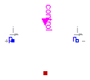

Modelica.Electrical.Analog.Ideal.IdealClosingSwitch
Modelica.Electrical.Analog.Ideal.IdealClosingSwitch
Modelica.Electrical.Analog.Ideal.IdealClosingSwitch
Modelica.Electrical.Analog.Ideal.IdealClosingSwitch
Ideal electrical closer

The switching behaviour of the ideal closing switch is controlled by the input signal control: off = not control.
For further details, see partial model IdealSwitch.
Extends from Modelica.Electrical.Analog.Interfaces.IdealSwitch (Ideal electrical switch).
| Type | Name | Default | Description |
|---|---|---|---|
| Resistance | Ron | 1.E-5 | Closed switch resistance [Ohm] |
| Conductance | Goff | 1.E-5 | Opened switch conductance [S] |
| Boolean | useHeatPort | false | =true, if heatPort is enabled |
| Type | Name | Description |
|---|---|---|
| PositivePin | p | Positive pin (potential p.v > n.v for positive voltage drop v) |
| NegativePin | n | Negative pin |
| HeatPort_a | heatPort | Conditional heat port |
| input BooleanInput | control | true => p--n connected, false => switch open |
 Modelica.Electrical.Analog.Ideal.IdealDiode
Modelica.Electrical.Analog.Ideal.IdealDiode
Ideal diode

This is an ideal diode, for details see partial model IdealSemiconductor
The diode is conducting if voltage > Vknee.
The diode is locking if current < Vknee/Goff.
Extends from Modelica.Electrical.Analog.Interfaces.IdealSemiconductor (Ideal semiconductor).
| Type | Name | Default | Description |
|---|---|---|---|
| Resistance | Ron | 1.E-5 | Forward state-on differential resistance (closed resistance) [Ohm] |
| Conductance | Goff | 1.E-5 | Backward state-off conductance (opened conductance) [S] |
| Voltage | Vknee | 0 | Forward threshold voltage [V] |
| Boolean | useHeatPort | false | =true, if heatPort is enabled |
| Temperature | T | 293.15 | Fixed device temperature if useHeatPort = false [K] |
| Initialization | |||
| Boolean | off.start | true | Switching state |
| Type | Name | Description |
|---|---|---|
| PositivePin | p | Positive pin (potential p.v > n.v for positive voltage drop v) |
| NegativePin | n | Negative pin |
| HeatPort_a | heatPort | Conditional heat port |